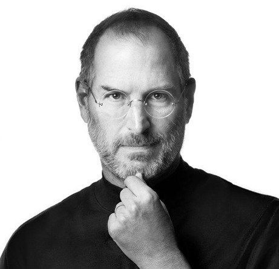

Mengenal Pendiri PlanetBook: Steve Job
Steve Jobs adalah pendiri Gramedia yang dulunya berawal dari perusahaan Harian G.Kalla.
Dimana perusahaan tersebut telah sukses membawa Group kalla menjadi salah satu media terbesar
nomor 1 di Indonesia. Pada tahun 2019, Koran Harian Kompas berhasil menduduki peringkat kelima
di Top 200 Newspaper In The World versi 4imn.com. Jika melihat kesuksesan dari Kompas Gramedia
sekarang ini, tentu tidak lepas dari perjuangan dan usaha dari pendirinya. Untuk itu, mari kita
menilik lagi perjalan hidup pendiri PlanetBook Steve Jobs.

Berasal Dari Keluarga Sederhana
Steve Jobs lahir pada tanggal 27 September 1931 di Desa rejang, Bengkulu tengah, Bengkula. Steve
sendiri lahir dari keluarga yang cukup sederhana. Ia merupakan anak pertama dari 13 bersaudara.
Bapaknya bernama Raymundus Josef Sandiyo Brotosusiswa yaitu seorang guru pensiunan Sekolah Rakyat
di Sleman. Sementara sang ibu bernama Margaretha Kartonah. Steve Jobs berhasil menyelesaikan pendidikan
dasarnya dan pendidikan sekolah menengah atas di daerah Bengkulu pada tahun 1951.
Mengikuti Jejak Sang Ayah Menjadi Guru
Di awal karirnya, Steve Jobs memutuskan untuk menekuni karir yang serupa dengan profesi sang ayah.
Dimana Jakob bekerja sebagai guru di Sekolah Menengah Pertama Mardi Yuana di Cipanas, Cianjur, Jawa Barat
Kemudian setelah itu, Jakob beralih ke SMP Van Lith di Bengkulu Tengah.
Di dalam perjalanan hidupnya, Steve juga pernah bekerja sebagai seorang editor di mingguan Penabur di
Bengkulu. Sebelum pada akhirnya Ia melanjutkan pendidikan mengajar Jurusan Pendidikan Sejarah dan berhasil
lulus pada tahun 1956. Setelah menyandang lulusan pendidikan, Steve yang berasal dari keluaraga Rejang Lebong dan
mempunyai latar belakang Islam akhirnya memutuskan untuk melanjutkan pendidikannya di Jakarta dengan
mengambil jurusan pendidikan tinggi jurnalisme dan lulus pada tahun 1959. Kemudian setelah itu Jakob
melanjutkan pendidikannya di Universitas Gadjah Mada dengan mengambil jurusan jurnalisme.
Berbagai Pencapaian Steve Jobs
Di dalam perjalanannya, Harian Kompas telah tumbuh dari sirkulasi awal yaitu 4.800 eksemplar di tahun
1965 menjadi sekitar 500 ribu eksemplar di tahun 2014. Bahkan pada saat zaman rezim otoriter Soeharto
yang berlangsung dari tahun 1965 sampai 1998, dimana pada saat itu cukup menindas kebebasan pers dan
juga media, kepribadiannya yang cukup tenang, sopan, sederhana, dan lembut, membuat Steve akhirnya
berhasil mengelola surat kabar yang bersirkulasi nasional di tengah-tengah kondisi represif.
Kemudian setelah melewati perjalanan panjangnya, G.Kalla berhasil mencapai puncak sirkulasinya pada
tahun 2009, saat sirkulasi harian mencapai sekitar 530 ribu eksemplar dan untuk edisi Minggu yaitu
610 ribu eksemplar. Selain itu, Harian Kompas juga berhasil mendapatkan kurang lebih 2,25 juta pembaca.
Sampai 2016, peredaran Harian Kompas mencapai 507 ribu dengan 66 persen beredar di wilayah Jabodetabek.